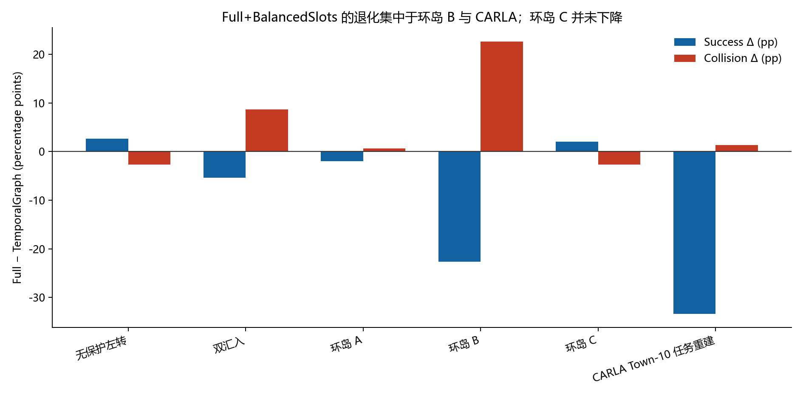
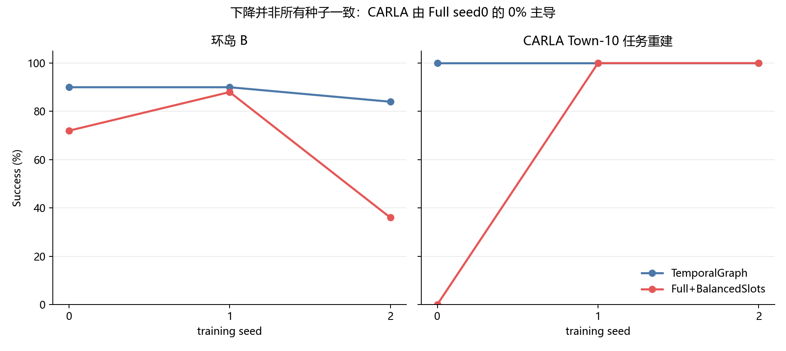

Full+BalancedSlots 场景退化诊断
冻结 108-run 矩阵、源码/资产审计与只读 deterministic rollout 的联合证据；未修改研究方法。
判定：模型完整组合存在结构性缺陷；现有场景不应因暴露缺陷而被替换。A/B/C 是直接 SMARTS SUMO 资产迁移，CARLA 只能称为 Town-10 任务语义的受控 SUMO 重建。
−9.78ppFull−TG 宏成功率
−22.67pp环岛 B 成功率
+2.00pp环岛 C 成功率（未下降）
1 XMLCARLA train/eval 共用
1. 逐场景事实
| 场景 | TG Success | Full Success | ΔSuccess | ΔCollision | ΔTimeout | ΔReturn |
|---|---|---|---|---|---|---|
| 无保护左转 | 95.3% | 98.0% | +2.7% | -2.7% | +0.0% | +0.053 |
| 双汇入 | 82.7% | 77.3% | -5.3% | +8.7% | -4.7% | -0.140 |
| 环岛 A | 96.7% | 94.7% | -2.0% | +0.7% | +1.3% | -0.027 |
| 环岛 B | 88.0% | 65.3% | -22.7% | +22.7% | +0.0% | -0.453 |
| 环岛 C | 81.3% | 83.3% | +2.0% | -2.7% | +0.7% | +0.047 |
| CARLA Town-10 任务重建 | 100.0% | 66.7% | -33.3% | +1.3% | +32.0% | -0.347 |
环岛 C 的主指标实际略升；清楚退化集中在环岛 B，CARLA 均值下降由 Full seed0 主导。


2. 场景来源与有效性
| 场景 | 迁移判定 | 持出互斥 | 可达性 | 限制 |
|---|---|---|---|---|
| 环岛 A | 可视为原 SMARTS 场景的直接 SUMO 资产迁移 | True | PASS | 无资产破损；但 A/B/C 不是只改变密度的单因子难度阶梯 |
| 环岛 B | 可视为原 SMARTS 场景的直接 SUMO 资产迁移 | True | PASS | 无资产破损；但 A/B/C 不是只改变密度的单因子难度阶梯 |
| 环岛 C | 可视为原 SMARTS 场景的直接 SUMO 资产迁移 | True | PASS | 无资产破损；但 A/B/C 不是只改变密度的单因子难度阶梯 |
| CARLA Town-10 任务重建 | 只能称为 Town-10 任务语义重建，不能称为原 CARLA 地图/动力学直接迁移 | False | PASS（含强制目标车道变换测试） | 只有一个交通 XML，train/evaluation 资产不互斥；仍有 SUMO seed 随机性 |
A/B/C
同一发布路网、不同 ego route/流量/时限。网络 SHA256 相同，拓扑与可达性通过；但不是只改变密度的单因子阶梯。名义配置流量约 820/950/450 veh/h，B 最密，C 路线最长。
CARLA
从 CARLA 源码与 waypoint 恢复任务约束，但路网、交通流和动力学均为 SUMO 重建。只有一个交通 XML，代码在训练与评估两侧复用；随机 SUMO seed 不等于持出交通资产。
3. 拓扑审计
| 场景 | Nodes | Edges | Conflict | 容量通过 |
|---|---|---|---|---|
| 无保护左转 | 17 | 62 | 20 | True |
| 双汇入 | 10 | 18 | 0 | True |
| 环岛 A | 44 | 160 | 40 | True |
| 环岛 B | 44 | 160 | 40 | True |
| 环岛 C | 44 | 160 | 40 | True |
| CARLA Town-10 任务重建 | 42 | 142 | 36 | True |
没有容量截断。双汇入的 conflict=0 是关键缺口：构图只识别 junction foes，不能表达下游 merge conflict。
4. 模型缺陷链
- 联合改动不可识别：Full 同时开启 topology query 和 non-affine slot normalization。
- lane attention 弥散：固定 20m 距离偏置、无路线/方向硬门；复杂图常等效关注 4–8 条 lane。
- 误差二次传播：same-lane/conflict 由两个软拓扑注意力相乘后进入车辆图。
- 路线 token 稀释：A/B/C 仅 2 个 route token 与 44 个 topology token 直接同池，等分质量仅 4.35%。
- BalancedSlots 删除置信幅值：每样本内 LayerNorm 不能保证跨 batch 平衡；Full latent std 更低而 slot-scale ratio 更高。
- 容量/预算失配：参数约 +40%，更新 +47%，推理 +87%，仍只给同样 100k raw steps。
- 稀疏奖励与离散阈值锁死：部分 seed 固化为单一横向动作符号，形成碰撞或超时。
| 只读轨迹 | 结果 | Mean speed | Cmd − | Cmd 0 | Cmd + |
|---|---|---|---|---|---|
| paper__full_balanced__carla__seed0 | timeout | 2.17 | 5.0% | 3.0% | 92.1% |
| paper__full_balanced__carla__seed1 | success | 7.60 | 39.4% | 60.6% | 0.0% |
| paper__temporal_graph__carla__seed0 | success | 8.88 | 100.0% | 0.0% | 0.0% |
| paper__full_balanced__roundabout_medium__seed2 | collision | 8.04 | 0.0% | 0.0% | 100.0% |
| paper__full_balanced__roundabout_medium__seed1 | success | 4.39 | 94.6% | 0.7% | 4.7% |
| paper__temporal_graph__roundabout_medium__seed2 | success | 6.84 | 44.3% | 13.4% | 42.3% |
| paper__full_balanced__roundabout__seed2 | success | 6.22 | 100.0% | 0.0% | 0.0% |
| paper__full_balanced__cross__seed1 | success | 6.81 | 25.8% | 28.0% | 46.2% |
| paper__temporal_graph__cross__seed1 | success | 6.53 | 51.1% | 17.3% | 31.7% |
5. 是否需要另外设计场景
不替换现有主场景。保留 A/B/C 与双汇入；CARLA 分栏标为受控 proxy。新增场景只用于因果诊断：
- 现有场景上的 topology × slot-normalization 2×2 正交消融。
- 同图、同路线、同时限，只改变流量的环岛密度梯度。
- 双汇入显式 merge-conflict 关系配对。
- 无关 topology token 数量压力测试。
- CARLA 换道/行人 on-off 与左右镜像配对。
- 环岛 B/CARLA 至少 10 个预注册 seeds；预算曲线须预注册。
6. 证据边界
- 3 个训练 seeds；50 回合不能替代训练重复。
- 环岛 B 的方向最稳；CARLA 由单 seed 主导。
- 宏观差值 Holm 校正后不显著。
- 机制链与代码/诊断/轨迹一致，但仍需 2×2 才能给组件级因果。
伴随材料：TECHNICAL_REPORT.md、full_balanced_diagnosis_companion.ipynb、tables/*.csv、evidence_manifest.json。